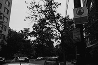

Public Safety and Justice Report by Ward
Ward 3
Matt Covert has been living in Ward 3 for about a year, and over the last few months, he’s become well-acquainted with the Woodley Park community. The former college student says Ward 3 is a “super safe” place to live, and that crimes committed in the area are few and far between. The neighborhood’s heavy police presence reassures him that he is protected, and he would easily recommend Woodley Park to other students looking to move to D.C.
Graphs & Statistics
Race

Demographic Statistics
- General
- Suburban in nature
- Population has increased in this ward
- Has the lowest infant mortality rate per 1,000 births
- Income
- Avg. family income: $257,224
- Education
- At least 90% of Ward 3 residents have a high school diploma
- 85% of Ward 3 residents have a bachelor’s degree (a 1% change between 2009 2014)
- Poverty
- 9.6 percent poverty rate
- 2% children living in poverty
- 3% seniors living in poverty
Crime Statistics
- Violent Crime
- Saw a decrease of over 20% of assault with a dangerous weapon
- Property Crime
- 9% decrease in property crime
- 20% reduction in motor vehicle theft
- 574 Theft from Auto offenses in 2014